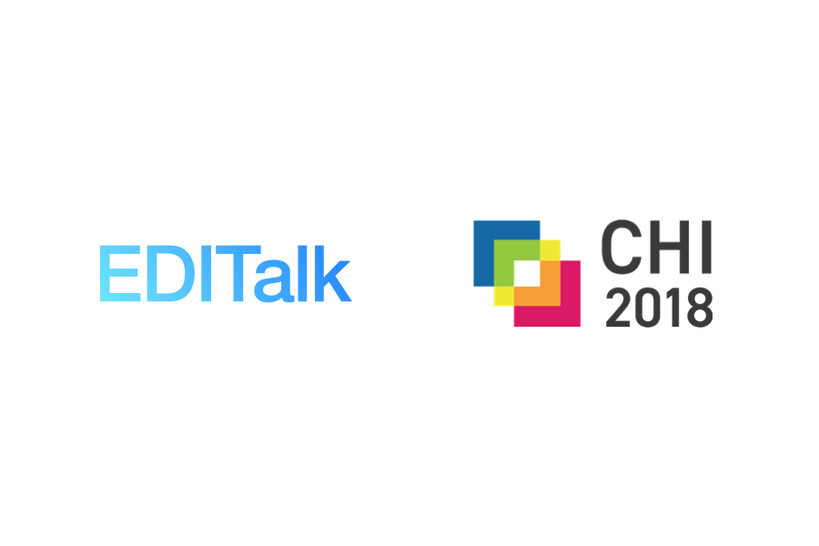
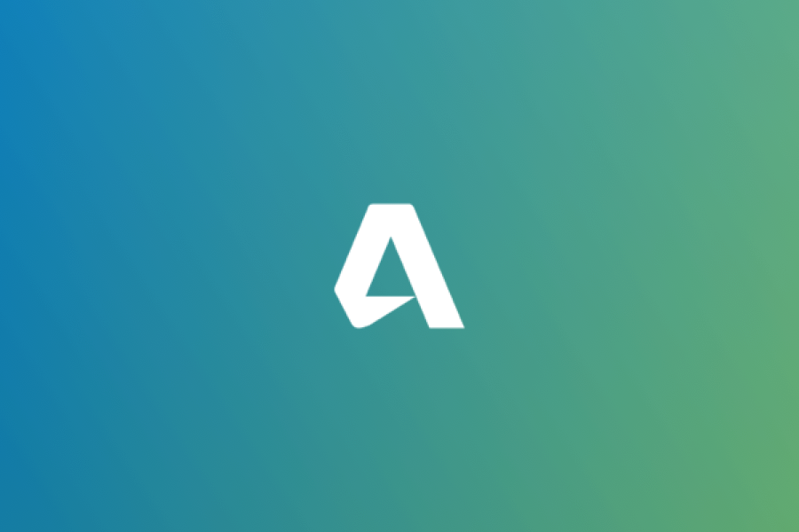

UI Optimization | Cognitive Research | KLM Analysis

Conversational User Interface
HCI Research

Autodesk Intern Proj
UI Design | Web Dev | Agile Process
Goldman Sachs Intern Proj
UI Design | Web Dev | Business Process Modeling
8 Days in Japan
Digital Media Production | Photobook | Travel Notes
Code Snippets
Education:
2017 - 2018: Master of Professional Studies, Information Science | Cornell University
2013 - 2017: Bachelor of Computing, Computer Science (specializing in Interactive Media) | National University of Singapore
Employment:
2017: Research Intern, Human-Computer Interaction | NUS-HCI Lab
2016: Teaching Assistant, Computer Graphics | National University of Singapore
2016: Summer Analyst, Operations | Goldman Sachs
2015: Software Engineer, Quality Assurance | Autodesk
Publication:
"Simulating Crowd Motion Using Density Estimation and Optical Flow" - WCS 2017, Computer Graphics/Agent Based Simulation, First Author
I'm a master student pursuing a degree in Information Science in Cornell University. My focus area of studies are Human-Computer Interaction, UI / UX Design.
Before I came to the State, I spent 4 years in a beautiful tropical island, Singapore, where I obtained my Honours Bachelor's degree (graduated with distinction) in Computer Science from National University of Singapore.
I enjoy coding as well as working with graphics. You may find me playing with Sketch while having Terminal window opens when I'm working.
I'm currently doing a project with Microsoft Research on creating a platform that helps non-programmer using some of the coolest JavaScript libraries. Checkout Microsoft MakeCode if you want to know more about the project.
If you are also passionate about coding and graphics, feel free to drop me a message, I'll be more than happy to co-project with you.


 Microsoft MakeCodeUX Design | Rapid Prototyping | Web Dev
Microsoft MakeCodeUX Design | Rapid Prototyping | Web Dev RideNUSUI/UX Design | User Studies
RideNUSUI/UX Design | User Studies ReindeerUX Design | Software Engineering
ReindeerUX Design | Software Engineering Sqaure2D Illustration | Visual Creation
Sqaure2D Illustration | Visual Creation Bill SplitterUI Optimization | Cognitive Research | KLM Analysis
Bill SplitterUI Optimization | Cognitive Research | KLM Analysis
 Goldman Sachs Intern ProjUI Design | Web Dev | Business Process Modeling
Goldman Sachs Intern ProjUI Design | Web Dev | Business Process Modeling
 8 Days in JapanDigital Media Production | Photobook | Travel Notes
8 Days in JapanDigital Media Production | Photobook | Travel Notes